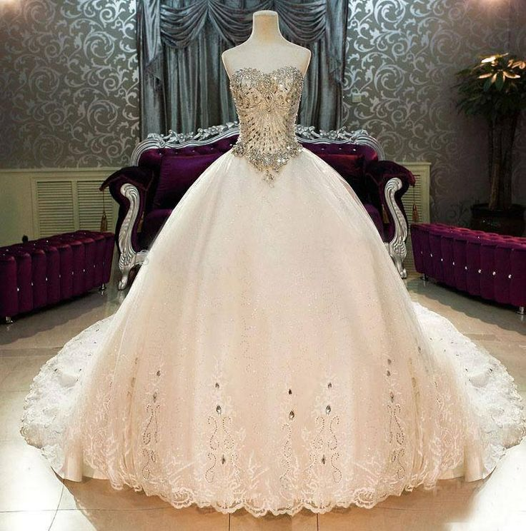

Свадебные платья Свадьба - наверное, одно из самых волнующих событий в жизни женщины. К нему тщательно и долго готовятся, о нем слагают приметы, в конце концов, его ждут с особым трепетом и волнением.
Многие женщины убеждены в том, что все в этот день должно пройти на высшем уровне.
А свадебные платья выступают одним из наиболее важных атрибутов этого мероприятия.
Наш интернет-магазин предоставляет Вам возможность выбрать платье на любой вкус.
Мы сделаем Вашу свадьбу незабываемой!
В качестве аксессуаров подходят удлинённые серьги и колье с небольшими камнями. Учитывая историю происхождения фасона, хорошим дополнением к нему станет небольшая диадема в волосах. Современные цельнокроеные модели весьма удачно дополняются широким поясом контрастного цвета, он делает акцент на самой привлекательной части женской фигуры – талии.

©Все права защищены